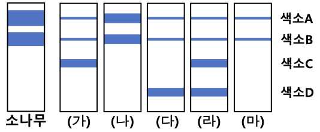

문제 2
바다에 서식하는 해조류는 수심에 따라 다른 색소를 발현한다. 수심에 따라 도달하는 빛의 파장이 다르기 때문이다. 수심이 다른 곳에서 같은 종의 해조류(가)~(마)를 채집했다. 빛을 흡수하는데 필요한 색소를 추출하고 종이 크로마토그래피 방법으로 분리했다[그림]. 육상 생물과의 비교를 위해 소나무 잎 색소도 같은 방법으로 추출하고 분리했다.

(1) 해조류(가)~(마) 중 해수면 근처에 가장 많이 분포할 것으로 예상되는 해조류를 말하고 이유를 설명하시오. [1점]
각 해조류의 유전자 발현을 분석한 결과, 색소A~D를 만드는데 필요한 효소들의 유전자는 아래 4가지 유전자를 제외하고 모든 해조류에서 발현되고 있었다. 유전자ⓐ~ⓓ의 발현 유무가 색소 양과 종류의 차이를 만드는 것이다[표]. 색소A는 TCA 회로에 있는 5탄소 화합물로부터 만들어지고, 색소C는 아세틸 CoA로부터 만들어진다.
| 해조류 | |||||
|---|---|---|---|---|---|
| 유전자 | (가) | (나) | (다) | (라) | (마) |
| ⓐ | X | O | X | X | X |
| ⓑ | O | X | O | X | O |
| ⓒ | X | X | O | O | X |
| ⓓ | O | X | X | O | X |
(O: 발현됨, X: 발현 안 됨)
(2) 유전공학 기술을 이용하여 해조류(나)에 유전자ⓐ~ⓓ 중 한 개를 발현시켰더니 색소C가 만들어졌다. 이때 발현시킨 유전자를 말하고, 해조류(나)에서 색소A의 양적 변화를 예측하시오. [2점]
(3) 해조류(가)의 세포로부터 핵을 분리하여 해조류(마)의 세포 내부에 넣었더니 색소C가 만들어졌다. 하지만 해조류(다)의 세포로부터 핵을 분리하여 해조류(마)의 세포 내부에 넣었더니 색소D가 만들어지지 않았다. 이유를 설명하시오. [2점]